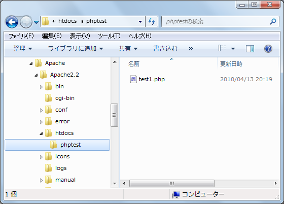
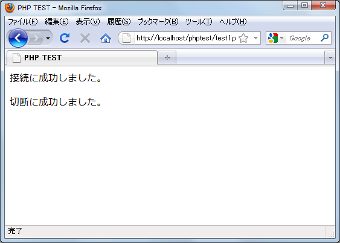

MySQLへ接続
それでは実際にPHPを使ってMySQLへ接続してみます。「mysql_connect」関数を使います。
mysql_connect resource mysql_connect([string server [, string username [, string password [, bool new_link [, int client_flags]]]]])
MySQL サーバへの接続をオープンあるいは再利用します。
引数：
server 接続先のMySQL サーバ。"hostname:port" のようにポート番号を
指定することが可能で、localhost では ":/path/to/socket" のように
ソケットへのパスを指定することも可能です。
サーバ名に "localhost" や "localhost:port" を指定した場合、MySQL
クライアントライブラリはそれをオーバーライドし、ローカルソケット
（Windows では名前つきパイプ）に接続しようとします。TCP/IP を用い
たい場合は、"localhost" のかわりに "127.0.0.1" を用いてください。
username ユーザー名
password パスワード
new_link 同じ引数で 2 回 mysql_connect() をコールした場合、2回目
は新規のリンクが確立されるのではなく、代わりにすでにオープンさ
れたリンクのリンク ID が返されます。パラメータ new_link はこの
動作を変更し、既に mysql_connect() が同じパラメータでコールされ
ている場合でも常に新規のリンクがオープンされるようにします。
client_flags 圧縮プロトコルやSSL暗号化(Windows版は未対応)などの
パラメーターの指定
返り値：
成功した場合に MySQLリンクIDを、失敗した場合にFALSE を返します。
実際の使い方としては下記のようになるかと思います。
$link = mysql_connect('localhost', 'user', 'pass');
$link = mysql_connect('example.com:3307', 'user', 'pass');
$link = mysql_connect('127.0.0.1:3307', 'user', 'pass');
$link = mysql_connect('/tmp/mysql', 'user', 'pass');
MySQLの切断
接続後、接続を切断するには「mysql_close」関数を使います。
mysql_close bool mysql_close([resource link_identifier])
指定した link_identifier が指す MySQL データベースへの非持続的リンク を閉じます。link_identifier が指定されない場合、最後にオープンされた リンクが使用されます。 持続的でないリンクはスクリプトの実行終了時に自動的に閉じられるので、 通常は mysql_close() を使用する必要はありません。 引数： link_identifier MySQLリンクID 返り値： 成功した場合に TRUE を、失敗した場合に FALSE を返します。
実際の使い方としては下記のようになるかと思います。
$link = mysql_connect('localhost', 'user', 'pass');
// MySQLに対する処理
mysql_close($link);
エラー処理
MySQLに対する処理の過程で何かエラーが発生した場合「mysql_error」関数でエラーメッセージを取得することが出来ます。
mysql_error string mysql_error([resource link_identifier])
直近のMySQL関数からのエラー文字列を返します。MySQLデータベースバック
エンドから返ってくるエラーは、警告を発生しません。
代わりに mysql_error() を用いて エラー文字列を取得してください。
引数：
link_identifier MySQLリンクID
返り値：
直近のMySQL関数からのエラー文字列を返します。エラーが発生していな
い場合には、'' (空文字列) を返します。
例え「mysql_connect」関数利用時にエラーが発生した場合、エラーメッセージを見るには下記のように記述します。
$link = mysql_connect('localhost', 'user', 'pass');
if (!$link) {
print(mysql_error());
}
// MySQLに対する処理
mysql_close($link);
実際には接続に失敗した場合、その後のMySQLに対する処理を実行出来ない為、「exit」関数又は「die」関数を用いてスクリプトを終了させます。
$link = mysql_connect('localhost', 'user', 'pass');
if (!$link) {
die('接続失敗です。'.mysql_error());
}
// MySQLに対する処理
mysql_close($link);
※「exit」関数及び「die」関数については『スクリプトを終了する(exit, die)』を参照して下さい。
テスト
では実際に試してみます。ユーザー名「testuser」、パスワード「testuser」で接続を行います。
<html>
<head><title>PHP TEST</title></head>
<body>
<?php
$link = mysql_connect('localhost', 'testuser', 'testuser');
if (!$link) {
die('接続失敗です。'.mysql_error());
}
print('<p>接続に成功しました。</p>');
// MySQLに対する処理
$close_flag = mysql_close($link);
if ($close_flag){
print('<p>切断に成功しました。</p>');
}
?>
</body>
</html>
今回は上記を「test1.php」としてローカル環境で稼動しているApacheのドキュメントルート以下に設置しました。

ブラウザから「http://localhost/phptest/test1.php」へアクセスします。

上記のように表示されれば、PHP経由でMySQLへの接続と切断が成功しています。
( Written by Tatsuo Ikura )

著者 / TATSUO IKURA
初心者～中級者の方を対象としたプログラミング方法や開発環境の構築の解説を行うサイトの運営を行っています。